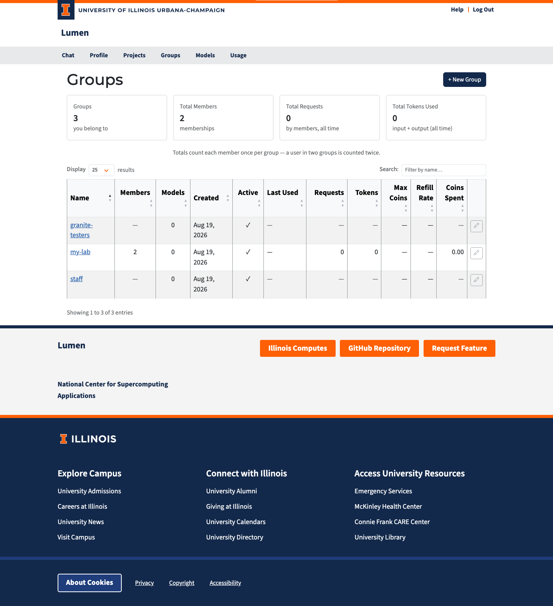

Groups¶
The Groups page (/groups) is where you manage groups — named collections of users and projects that share a coin budget policy and access to owned models.

What Is a Group?¶
A group bundles members together so that policy can be applied once instead of per person:
- Coin policy. A group can carry a coin budget (Max Coins and a Refill Rate). Every member inherits it unless they have a budget of their own. The group does not hold a shared balance — each member gets their own balance governed by the group's policy.
- Model access. A model with an owner is private to that owner. Granting it to a group opens it to every member of the group. This is how you share a model you own with a team.
Members can be users or projects. A project is its own identity for API traffic, so a project member inherits the group's models and coin policy for requests made with the project's API keys.
Who Can See What¶
| Role | Visibility |
|---|---|
| Admin | All groups in the system, including members and usage for every group |
| Member | Only groups they belong to |
Anyone signed in can create a group, so the Groups page is always available.
Groups with no owner¶
A group with no owner has nobody accountable for its membership — typically a large auto-join group populated by login rules. For those groups the member list and all usage totals are hidden from everyone except administrators, and their usage is left out of the summary cards. Requests, Tokens and Coins Spent show a dash. This stops a large auto-assigned group from becoming a way for any member to browse the whole user directory.
Everything that affects you as a member stays visible: the group's name, whether it is active, how many members it has, its coin policy, and the models it grants you. Assigning an owner makes the hidden columns visible to members again.
Summary Cards¶
| Card | Description |
|---|---|
| Groups | Number of groups visible to you |
| Total Members | Combined memberships across those groups |
| Total Requests | Combined API requests made by members |
| Total Tokens Used | Combined input + output tokens |
Usage is summed over each group's members. A member who belongs to two groups counts toward both — these are per-group views of member activity, not a split of overall traffic.
Group Table¶
| Column | Description |
|---|---|
| Name | Clickable link to the group detail page |
| Members | Number of users and projects in the group |
| Models | Number of owned models granted to the group |
| Created | When the group was created |
| Active | Green checkmark for active, red X for deactivated |
| Last Used | When a member last made a request |
| Requests | Total API requests by members |
| Tokens | Total input + output tokens by members |
| Max Coins | The group's coin ceiling per member (∞ = unlimited, — = no group pool) |
| Refill Rate | Coins added per hour under the group policy |
| Coins Spent | Total coins spent by members |
Click any column header to sort. Use the search box to filter by name.
Each row has an edit (pencil) button and an activate/deactivate button, enabled for the group's owner and for admins. Other members see the pencil disabled with a note explaining why.
Auto-join groups¶
A group can auto-join members: administrators define rules on the group's Rules tab (or when creating the group), and anyone whose login claims match all of the rules is added at sign-in — and removed again when they stop matching. An auto-join group is fully automatic: it has no owner, and members cannot be added or removed by hand — the rules alone decide membership. See Group Management for details.
Creating a Group¶
Anyone can create a group:
- Click + New Group.
- Enter a name, and optionally a description.
- Click Create.
You become the owner of the group and are redirected to its detail page.
Administrators see extra fields in the dialog: an Owner search box (leave it blank for a group with no owner) and Max Coins / Refill Rate for the group's coin policy. Non-admins cannot set an owner or a coin policy — an admin has to add the coin policy afterwards.